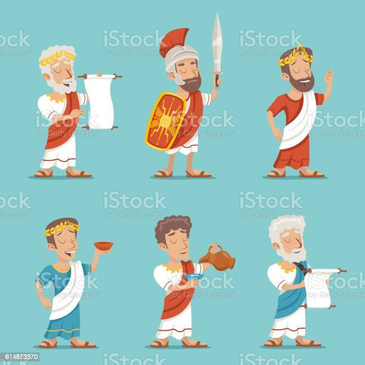

The Composition of the the Roman Legion By Darren Cho
The Roman Legion, the military might of the Roman Empire here we will look at how the legion was structured from the lowly legionary to the top officer.
At full strength, the legion could house up to 6,000 men with around 700 of those men being designated as non-combatants fulfilling roles like surgeons and cooks.1
From the bottom, the new rank and file would join a tent of eight men known as the contubernium, ten contubernium formed the century with a centurion leading them.1
Six centuries formed the cohort with a total 480 fighting men, with the first cohort being double strength with 800 fighting men.1
This first cohort was particularly special as it housed the most elite of the legion and was led by the Primus Pilus the most experienced of all the Centurions.1
The last and most prominent of all units of the Roman Army was the legion itself which comprised of ten cohorts.1
| Conturberium |
Century |
Cohort |
I Cohort |
Legion |
| 8 men |
80 men |
480 men |
800 men |
6,000 men |
The Equipment of the the Legionaries and Officers
As the Empire changed through its rulers and government one thing stayed consistent, the equipment of the Roman Legion. In terms of weapons each soldier was equipped with a short sword called a Gladius, next they would be equipped with a light projectile weapon known as Pilum, a roman javelin.2
The last weapon a Roman soldier would have at their disposal is a small dagger known as Pugio that was used in close quarters situations or if the soldier lost their gladius.2
Next, each roman soldier and officer had their own set of armor. In the inner most layer was the Lorica Hamata or chain mail that served as a flexible first layer of protection.1
Next came the Lorica Segmentata, plate armor, a outer piece of armor that consisted of laminated bound iron to create a strong outer layer.1
Lastly, each common soldier was issued helmets known as the Galea, while officers wore more ornate helmet to signify their rank and status.1

The Leaders of the Legion
While the average legionaries served as the muscle of the Legion they cannot function without leadership. It was mentioned before that a centurion leads a century there are many other high-ranking positions that are worthy of introduction. The highest-ranking officer of the Legion is the, Legatus, a rank that was appointed by the emperor in which they could command multiple legions and have the double role as provincial governor.1
The second in command was the Tribunus Laticlavius, these officers were less experienced commanders that served behind the Legatus.1
Next, were the mentioned Primus Pilus centurions of the first cohort, then centurions, and lastly the Optios who were the second in commands to centurions.1
Other officers in no particular hierarchy were the Aquilifer, a low-level officer responsible for carrying the Legions standard, the Signifer who was in charge of the soldiers pay, and the Cornicen who was the legions horn blower who was in charge of giving commands of the officers.1
Its this rigid structure that allowed the Roman Army to conquer the majority of ancient Europe.
- Legatus
- Tribunus Laticlavius
- Primus Pilus
- Centurion
- Optios
- Legionary
- Aquilifer
- Signifer
- Cornicen
| | |